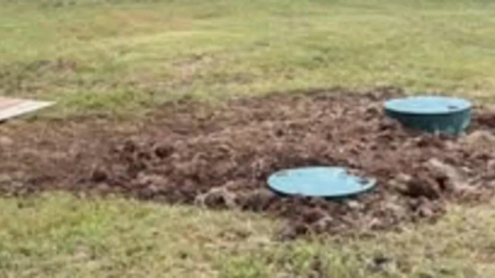

Septic Service Overview
New system installation, how the whole process works, and what a septic system is doing underground.
For buyers, sellers and owners who want to know what is actually under the ground before money changes hands. We pump, we open it up, and we tell you what we find.

A septic system is one of the few things on a rural property that can cost five figures to put right and cannot be seen from the driveway. On an acreage outside Salina it is also the thing least likely to have paperwork. An inspection turns the biggest unknown in the transaction into a known quantity. Whether that number helps the buyer or the seller, both of them are better off knowing it before closing than after.
Request a QuoteA real inspection means opening the system, not looking at the yard. We locate and open the tank, pump it so the interior is actually visible, and check the tank walls, the inlet and outlet, and the baffles. An empty tank is the only time anyone can see its real condition, which is why an inspection that skips the pump-out is not telling you much.
We check the distribution box, because a broken or shifted box is common, cheap to fix, and easy to mistake for whole-field failure. Then we look at how the tank refills and at the ground above the drain field, which together say more about the field's remaining life than anything else available without excavating it.
You get a straight account of what we saw: what is sound, what is worn, what will need attention in the next few years, and what needs attention now. If the system is fine, we say so. We are not looking for work that is not there.
The worst time to find a septic problem is eight days before closing, with a buyer's deadline running and no leverage. At that point the repair costs whatever it costs, on whatever timeline is available, and it comes straight off the price.
Inspecting before listing turns that into a decision you control. Either the system is sound and you can say so in the listing, which removes a standard objection from every showing, or there is a problem and you choose whether to fix it, disclose it, or price for it, on your schedule, with time to get competitive quotes.
On the county side of it: Kansas onsite wastewater is regulated through KDHE and administered by county health departments, and requirements at property transfer vary by county and change over time. We are not going to tell you what your county requires today, because inventing that would be worse than useless on a page someone might act on. Call your county health department and ask directly. It is a short phone call and it is the only reliable answer.
A septic inspection from Mike's Services LLC includes:
Mike's Services LLC provides septic inspection services throughout Central Kansas including Salina, Tescott, Bennington, Minneapolis, Lincoln, Ellsworth, and Abilene. We serve property owners across Saline County, Ottawa County, Lincoln County, Dickinson County, Ellsworth County, and Cloud County. Not sure if we cover your location? Call us. We may be able to help even in areas not listed here.
Common questions from Central Kansas property owners.
Locating and opening the tank, pumping it so the interior is visible, checking the tank walls, inlet, outlet and baffles, inspecting the distribution box, and assessing the drain field by its surface condition and how the tank refills. An inspection without a pump-out cannot see most of that.
Anyone buying rural property, anyone selling rural property who would rather find a problem on their own schedule than under a closing deadline, and any owner of a system over about twenty years old who has never had it looked at.
Usually a couple of hours including the pump-out. Finding a buried lid on a property where nobody knows the system layout is what adds time.
Most often a tank that is simply overdue for pumping, worn baffles on older concrete tanks, and shifted or broken distribution boxes. Genuine whole-field failure is less common than people fear, but it is the one worth catching before closing.
Requirements vary by county and change over time, so we will not state one here. Kansas onsite wastewater is regulated through KDHE and administered by county health departments. Call your county health department directly for the current requirement on your property.
Most people call about one of these and turn out to need another. Here is the whole list.
New system installation, how the whole process works, and what a septic system is doing underground.
Routine tank pump-outs and clean-outs. If you cannot remember the last one, it is due.
Sewer line backups, lateral lines, yard drains and drain tile. 24/7 for the emergencies.
Failing drain fields, cracked or collapsed tanks, broken distribution boxes and crushed lines.
Soil percolation testing and site evaluation, the step that decides what system the ground will take.
📄 From the Blog: Septic Inspection When Buying or Selling Property in Saline County KS. Read the full guide.
📄 From the Blog: Questions to Ask a Septic Contractor in Rural Kansas Before You Hire. Read the full guide.
Back to Septic Service in Salina & Saline County, or see everything Mike's Services LLC does.
Call us or submit a quote request and we will get back to you quickly with honest answers and a clear price.